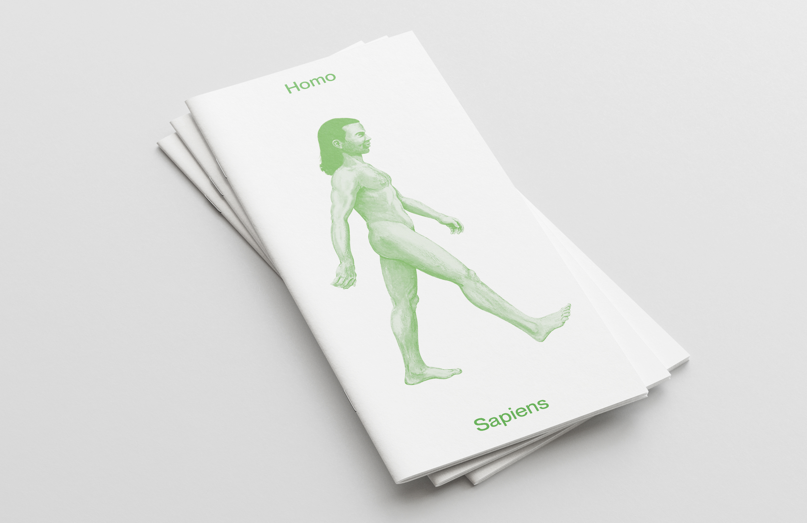

Publication
Homo Sapiens

Printed matter
102 x 237 mm
102 x 237 mm
This book is based on content from Wikipedia about Homo sapiens, reimagined through a cohesive visual system.
I mainly used a green color palette, symbolizing the vitality and continuity of human life.
I also used a mix of serif and sans-serif typefaces to create a clear typographic hierarchy—distinguishing titles and quotes from the body text—while reinforcing the balance between history and modernity in the narrative of our species.